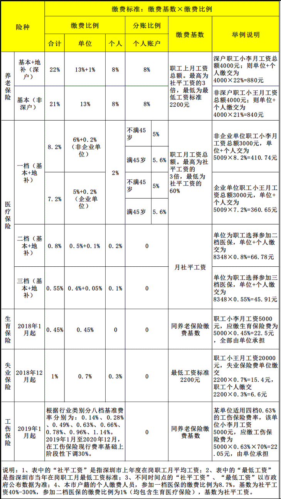

A.五险一金
通常所说的社保即是“五险一金”，包括：养老、医疗、生育、失业、工伤五种保险以及住房公积金。
1.养老保险
养老保险顾名思义，是给你养老用的钱。
这笔钱什么时候能用，能用多久，到你退休的时候，有多少钱，怎么发放，中间有断缴会有什么影响，怎么补救？
2.医疗保险
分3个档次。在大部分非出名的公司里，非深户一般都买二挡。深户必须买一档。
二挡缴纳方式：个人缴纳0.2%，公司缴纳0.6%，缴纳基数是本市的月社会平均工资。
3.生育保险
个人无需缴纳，公司缴纳0.45%，缴纳基数是职工上月工资总额。
4.失业保险
个人缴纳0.3%，公司缴纳0.7%，缴纳基数是本市的最低工资标准(深圳市2200元)。
5.工伤保险
根据行业类别分八个档，IT技术员适用
6.住房公积金
单位及职工的住房公积金缴存比例下限各为5%，上限各为12%。单位可以根据自身实际情况在规定的缴存比例下限和上限区间内自行选择合适的缴存比例。
大部分公司采用的缴存比例为单位及职工各5%，2018年7月1日至2019年6月30日，住房公积金缴存基数是2018年职工个人月平均工资总额。

B.五险一金的缴纳方法
对于深圳单位社保来说，采用网上申报及自助缴费的方式缴纳。正常情况下，社保局会在每个月的19号锁定对应公司社保台账。也就是以19号为分界点，19号前交纳当月的社保费，19号之后只能办理下个月的社保。
很多公司会在每月15号开始把职工的社保费打入公司社保账户。所以，如果新职工15号前入职，则公司会为其缴纳当月社保。而15号后入职，公司不会为新职工购买当月社保。本人以前所在的公司，如果职工20号后离职(上班到20号)，则公司会为其缴纳当月社保，如果20号前离职(含20号)，则公司不会为其购买当月社保。